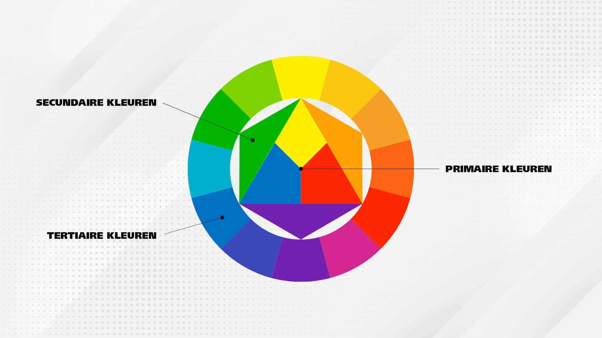

🎨 Kleurmodellen
Dit document geeft een overzicht van de belangrijkste kleurmodellen die gebruikt worden in digitale beeldvorming, drukwerk en visuele perceptie.
🌈 RGB
- Toepassing: Schermen, digitale camera's, projectoren.
- Werking: Additief model kleuren ontstaan door licht van rood, groen en blauw te combineren.
- Eigenschap: Meer licht = lichtere kleur. Volledige intensiteit = wit.
- Voorbeeld: (255, 0, 0) = fel rood.

🖨️ CMY / CMYK
- Toepassing: Drukwerk en printers.
- Werking: Subtractief model kleuren ontstaan door licht te absorberen.
- CMYK: De K (zwart) wordt toegevoegd om donkere tinten beter te kunnen weergeven.
- Voorbeeld: (0, 100, 100, 0) = fel rood in CMYK.
🎨 HSL
- Toepassing: Grafische software, kleurkiezer-tools.
- Werking:
- Hue (tint): De basiskleur (0-360° op de kleurencirkel).
- Saturation (verzadiging): Hoe intens de kleur is.
- Lightness/Value: Hoe licht of donker de kleur is.
- Voordeel: Intuïtiever voor ontwerpers dan puur RGB-waarden.
👁️ CIE XYZ
- Toepassing: Wetenschappelijke standaard (CIE 1931).
- Werking: Gebaseerd op de menselijke kleurwaarneming.
- Eigenschap: Functie als verbindende kleurruimte tussen verschillende apparaten.
🔬 CIELAB (L\a\b)
- Toepassing: Kleuranalyse, kleurvergelijking, kwaliteitscontrole.
- Werking:
- L\: Helderheid (0 = zwart, 100 = wit).
- a\: Groen <-> Rood.
- b\: Blauw <-> Geel.
- Eigenschap: Perceptueel uniform afstanden komen overeen met hoe mensen kleurverschil ervaren.
📊 Samenvatting
- RGB: Schermen, additief model.
- CMYK: Print, subtractief model.
- HSL/HSV: Intuïtieve kleurselectie.
- XYZ: Wetenschappelijke standaard.
- Lab: Perceptueel uniform en apparaat-onafhankelijk.